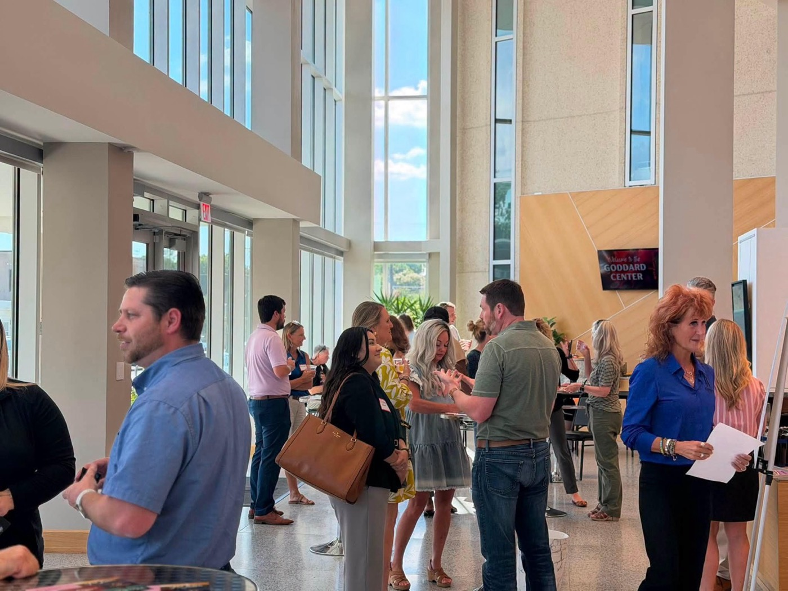
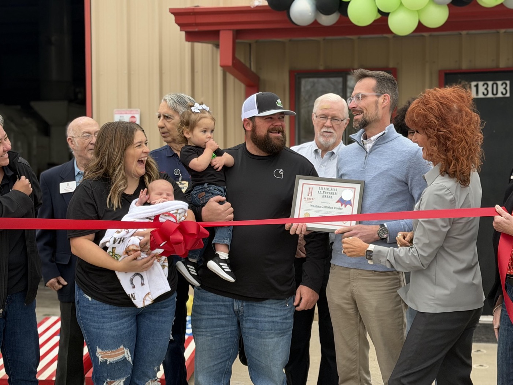
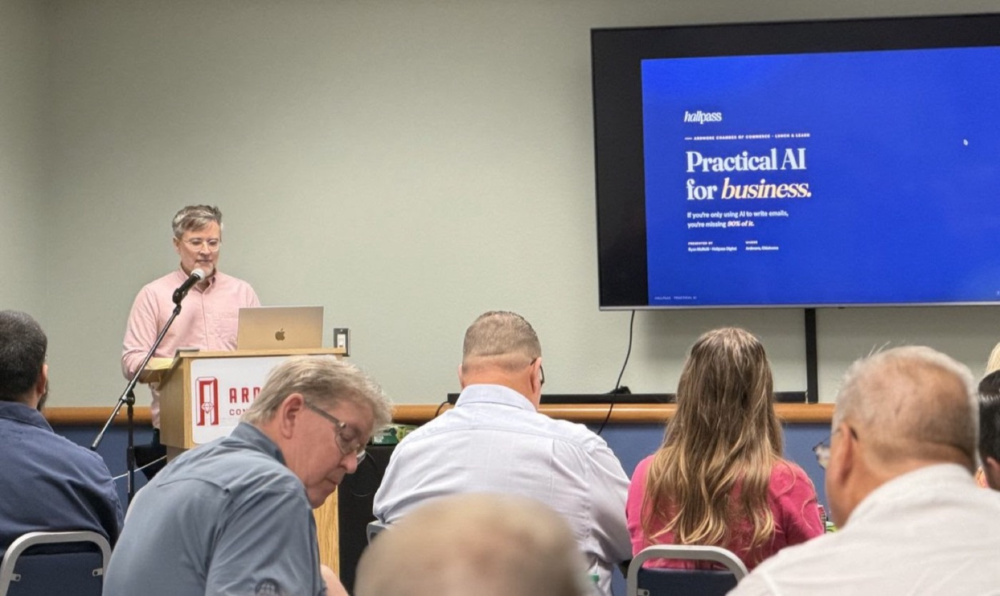
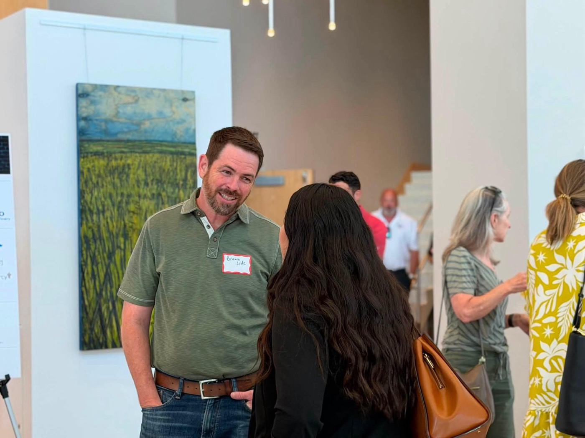

businesses
Your business,
known all over Ardmore.
Join 500+ local businesses using the Chamber to find new customers, make the right connections, and have a say in what happens next in Ardmore.
But you may be asking, “What would I get out of joining the Chamber?”
Here are the four outcomes our members tell us matter the most.

Get into the rooms where Ardmore does business.
Business After Hours, ribbon cuttings, and the Ambassador program — the relationships that turn into referrals and repeat customers.

Get known all over town.
Chamber social media, the weekly e-blast, and the member directory put your name in front of the community — at no extra cost.

Hear it here first.
State of the City, candidate forums, Lunch & Learn sessions, and member text alerts — members are in the know before anyone else.

Have a voice when it counts.
Legislative luncheons with your representatives and opportunities to network with city leaders. Build the relationship before you need it.
are members
“Getting involved in the Chamber introduces you to a wider audience than just putting a sign on the street corner.”
“People here are from every walk of Ardmore — small businesses to large corporations — all looking to make connections.”
“You get to meet all the other members and talk about what it is that you do. It builds community.”
Signature programs worth showing up for.
Chamber Ambassadors
The volunteer welcoming committee that cuts ribbons and greets new businesses. The fastest way to raise your profile.
Leadership Ardmore
A hands-on program that takes you behind the scenes of how Ardmore really works.
Chamber Classic Golf Tournament
Hole and tee sponsorships put your brand in front of Ardmore's decision-makers for a full day.
Simple, honest pricing.
Dues scale with the size of your organization. One membership covers every benefit in this brochure — no per-event fees to show up and be seen.
Come see for yourself.
Be our guest at the next Business After Hours. Free to attend. No membership required.
See the full benefits & RSVP →Already know you want in? Join now →